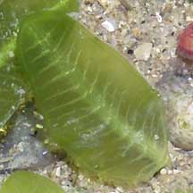
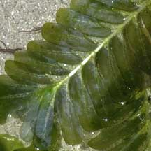

|
|
|
|
|
| Seagrasses
have veins. |
Seaweeds
do not have veins. |
| When
you squish a small piece of seagrass, you don't get a mushy liquid
as you do with seaweeds. |
When
you squish a small piece of green seaweed, you get a mushy liquid. |
| Seagrasses
have woody underground stems. |
Some
green seaweeds may have underground structures that look like stems
but these are not woody and do not have the same function as seagrass
stems. |
| Seagrasses
have real roots that absorb water and nutrients. They look like the
roots of more familiar land plants. |
Some
green seaweeds may have structures that look like roots but these
merely grip the ground or surface and are not specialised for absorbing
water and nutrients. |
| Seagrass
leaves do not come in as wide variety of shapes as green seaweeds.
They are either leaf-, fern-shaped or long and grass-like. |
Green
seaweeds come in a wide variety of shapes. Some may be fern-shaped.
Other shapes include bubbles, hair-like filaments, grapes, sheets,
perforated ribbons, fleshy disks. |
| Seagrasses
do not suddenly become extremely abundant. There may be variations
in lushness of seagrass meadows, but this is not as sudden or large
as with seaweeds. |
Some
green seaweed species may be seasonally abundant, covering the shores
in a thick layer and then disappearing several weeks later. |
| Seagrasses
produce flowers and fruits, but for most species found in Singapore,
these are tiny and they rarely bloom. |
Seaweeds
do not produce flowers or fruits. |